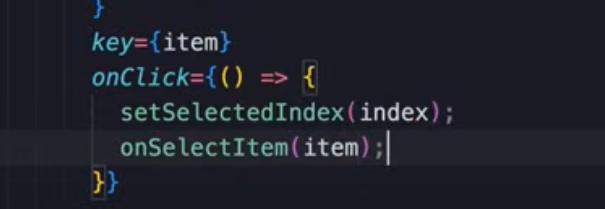

HOME
Passing Functions Via Props
Our List
It looks pretty good, when we click an item it gets selected, but in a
reeal app something should happen after an item is selected.
Maybe we want to filter a list of objects, or take the user to another
page, but something should happen.
Every app is different so we dont want to implement that logic in the
ListGroup. We want it to remain re-useable.
So, we need a mechanisim to notify the consumer(parent) of this
component that an item is selected.
The parent is the App, so when an item is selected we should notify
the App component.
Noting the selection
Currently we have 2 propertys, and we are using these to pass data to
our ListGroup.
We are going to add a 3rd property as a function, and call it down
here...
With that our App will be notified. Let's make it work.
The function signature
Imagine that we want a function that takes a parameter called 'item'
of type string, and returns void.
So lets add the prop.
By convention we start the word 'on'. So, 'onSelectItem'. The type of
the prop is a function that has a parameter of type string, and
returns void.
Problems
Use this to see all errs...
It's an err we should be familiar with. It's telling us we have not
yet added a prop that it's expecting.
Thanks Typescript!!
Adding the function
Now, we can write a function directly in the prop just like onClick..
OR, we could write a separate handler, which is preferred.
Then add the prop...
Finally
When destructuring the props we have to add our new one.
Then add the function to onClick

You should now see the name of the selected city printed to the
console by the App component.